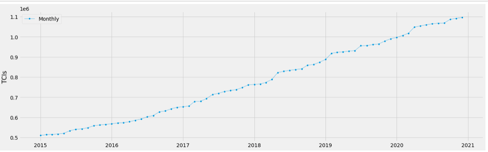

Overview
Possessing the ability to provide accurate forecasts for a company’s customer volumes is a powerful tool throughout many facets of an organization. The marketing, sales, operations, and executive management teams can all use these metrics to create strategic plans based on this data. For my third project this semester, I will be taking a look at total customer interaction data (TCIs) for a large financial institution over the past 5 years (2015-2020) and create a time series forecasting model to predict future customer volumes based on historical data. Every single channel that customers interact within this financial institution is collected and stored for future analysis. I want to create a model that can accurately predict the monthly total TCIs for this financial institution.
A TCI is categorized as any interaction the financial institution has with a customer. Examples include credit card swipes, calls to the contact center, clicks during online banking sessions, auto loan applications, etc. A major benefit to having an understanding of the future TCI volumes is for the production support side of the house. I will be looking at this data through the lens of a production support executive. The production support executive is in charge of the production support organization and would want to understand when we could potentially have a high or low volume of customer interactions. With this data, the leaders would be able to create plans that mitigate the risk of any outages within the financial institutions' infrastructure in those months. This includes avoiding scheduling high risk changes to reduce risk of accidental change caused outages during the high volume months. Also, managers can plan to have more resources “on-call” in the event an issue arises for quick triage and resolution.They can then plan these high risk changes on the months where customer volumes are lower and would cause less of a disruption for its customers. This data could be used for the front of the house strategies as well. Managers would be able to know when they need more staff on hand than a typical month (think tax season). By looking at historical TCI volumes for the past 5 years, I would like to be able to predict monthly TCI volumes for the future.
Hypothesis
My hypothesis is that I can successfully predict the total volume of customer interactions for the financial institution on a monthly basis for the upcoming years based on historical data. When leading a large organization such as production support for a large company, any available data points that can help with your strategic plan are essential to the job. With future TCI forecasts in hand, leaders can develop strategic plans for the upcoming years, quarters, and months. Without a strong plan in place, outages will occur causing negative financial and reputational costs to the company. Not only will customers be angry with your company, but you will also end up paying fines to the federal government if your customers are not able to access their funds in a specific period of time. Accurate forecasting customer volumes will allow you to understand and plan for the future volumes that will occur within your organization.
The Data
For this project, I will be examining a dataset of TCIs for all customer facing channels of a large financial institution for the past 5 years (2015-2020). Unfortunately, due to proprietary and privacy constraints, I will not be able to share specific data and will have to use “dummy” data throughout my presentation. However, I will thoroughly detail my steps in the data cleaning and modeling processes to provide a clear understanding of how the data was used.Here is an article that highlights common services provided by large financial institutions so you have an idea of what kind of interactions are collected.
The data contains TCIs from 12 different lines of business at the financial institution. The data is provided in both daily and monthly volumes. This is due to some lines of business reporting TCIs on a daily cycle and some reporting on a monthly cycle. In order to create an accurate forecast model, I want to present the data on a monthly total TCI volume. To accomplish this, I had to perform some manipulation of the data to ensure it totaled in that format for modeling. The data was arranged with each day in a separate row and with column headings of Daily TCIs, Monthly TCIs, and Date. The Daily TCIs is the total TCIs for all channels that report on a daily basis. The Monthly TCIs is the total TCIs for all channels that report on a monthly basis. I then grouped the Monthly TCIs by year and divided by 365 days to get the average daily volume for TCIs reported on a monthly basis. Then I added this number to each day's Daily TCIs column to come up with a new column labeled Total TCIs. This is the number I will be attempting to predict in the future with my time series forecasting model. I then grouped this daily data by total TCIs for each month to present the data on a monthly basis for modeling.
Method
 Visual of the overall trend of the TCI datasetOnce the data was formatting correctly for modeling, I began the exploratory data analysis portion of the project. It is very important in time series forecasting to inspect the data for any anomalies, missing data, or trends in the dataset. The easiest way to do this is to plot the data to understand what the data looks like. When I plotted my data, I noticed that there was a general increasing upward trend over the past five years. There were no drastic leaps or falls. It was just a slow positive growth. In time series forecasting, it is important to understand two main patterns in your data; Trend and Seasonality. These items are important when choosing a time series forecasting model in the next step. Using the statsmodel package, I ran the dataset through the seasonal decompose function to identify if there were any obvious general increasing trends or seasonal changes. After plotting the data with this package, I could see an overall increasing trend along with a yearly seasonality spike around April of every year (this is mainly due to tax season).
In addition to seasonality and trends, the other most important item to understand about your dataset when creating a time series forecast model is stationarity. “A dataset is stationary if its statistical properties like mean, variance, and autocorrelation do not change over time. Most time series datasets related to business activity are not stationary since there are usually all sorts of non-stationary elements like trends and economic cycles. But, since most time series forecasting models use stationarity...to make predictions, we need to “stationarize” the time series”, (Shao, 2020). To check for stationarity, I plotted my data to visualize the stationarity of the data and ran it through the Augmented Dickey-Fuller (ADF) Test. The plot showed a clear change over time for the mean. The standard deviation seemed as though it remained relatively flat. However, I wanted to run the data through the ADF Test to verify as visuals can sometimes be deceiving.
Seasonality and Trend visualsAfter running the dataset through the ADF Test, the data turned out to be fairly stationary with 90% confidence. However, I wanted to see if there were any transformations I could perform on the data to increase this confidence of stationarity. I ran the data set through three different approaches to stationarize; detrending, differencing and a combination of the two transformations. None of the transformations made the data any more stationary than it already was. Therefore I proceed with the data as is to create the most accurate model. I then split the data into a training and test dataset. I split the data 80% train and 20% test. To do this split, all of that data from 2015-2019 was my training data and the data from 2020 was my test data.
Now for the modeling portion of the project. There are a variety of time series forecasting models to choose from within Python. I chose two models to run my data through based on the characteristics of my data. The Holt-Winters Seasonal Method and the SARIMA method are both used with datasets that have trend and/or seasonal characteristics to it. As I indicated above, my dataset had both of these attributes. I then had to decide if I was going to use an Additive or Multiplicative seasonality for these two methods. “ There are two general types of seasonality: Additive or Multiplicative. Additive [is when] seasonal changes in the data stay roughly the same over time and don’t fluctuate in relation to the overall data. Multiplicative [is when] the seasonal variation changes in relation to the overall changes in the data. So, if the data is trending upward, the season differences grow proportionally well”, (Shao, 2020). Based on the upward trend of my dataset, I chose a multiplicative seasonality for my models. My data has a yearly seasonal pattern with 5 years of data, and aggregated it by month. Therefore each data point is one month, so my m = 2 (12 months x 1 seasonal pattern / 5 years) .
Results
The first model I ran the data through was the Holt-Winters Seasonal Method. Running the data through this model was pretty straight forward after I determined the multiplicative seasonal pattern I was going to use. I plugged in my test and train data along with the seasonal pattern to create a model with data through 2020. The model provided a low root mean squared error (RMSE). However, the data it predicted did not seem to take into account very well the seasonal patterns of the data. It followed a fairly linear upward trend right through the middle of the actual data. This was a great sign that I had created a successful model. However, I was hopeful the SARIMA model would improve on these results as it is a bit more detailed when it comes to looking at trends and seasonality in the data. “While exponential smoothing models use weighted averages of past observations to forecast new values, Auto-Regressive Integrated Moving Average or ARIMA models look at autocorrelations or serial correlations in the data. In other words, ARIMA models look at differences between values in the time series...SARIMA builds upon the concept of ARIMA but extends it to model the seasonal elements in your data”, (Shao, 2020).
Results from Holt-Winters Seasonal MethodThe second model I ran the data through was the SARIMA model. It took a couple more steps to create this model. I first had to run my data through a “grid search” to identify the best order and seasonal order for the model. “In order to get the best prediction, it’s important to find the values of SARIMA(p,d,q)(P,D,Q)m that optimize a metric of interest...Trend Elements: p: Trend autoregression order. d: Trend difference order. q: Trend moving average order. Seasonal Elements: P: Seasonal autoregressive order. D: Seasonal difference order. Q: Seasonal moving average order. m: The number of time steps for a single seasonal period”, (Shao, 2020). I used the Akaike Information Criterion (AIC) evaluation during this “grid search”. “The AIC measures how well a model fits the data while taking into account the overall complexity of the model. In general, we want to pick the combination with the lowest AIC value”, (Shao, 2020). Once the optimal PDQ was identified (it ended up being (1,1,1)x(1,1,1,2)), I plugged this data into my model and predicted future customer volumes for the next twelve months (or the year 2021). The model had a higher RMSE than the Holt-Winters Seasonal Method, but fit the trends and seasonality better overall.
Results from SARIMA modelThe two models provided different results that needed interpreting to ensure the best model was chosen. The Holt-Winters Seasonal Method provided a lower RMSE than the SARIMA model. However, when forecasting with the two models, it was clear the SARIMA model was far more effective, even with a higher RMSE. The Holt-Winters Seasonal Method fits the actual data very well. However, the forecasted data is not very close in the future. The SARIMA model on the other hand, provided a much better forecast for total future customer volumes. Although the RMSE was higher, the ability to provide an accurate forecast made this model the better choice for my data. It is important to weigh all the aspects of a model, not just RMSE or other model evaluation statistics. The goal of my project was to create the best model for predicting future customer volumes. Not the model that fits the already known historical data best.
Forecast from the SARIMA modelConclusion
Overall, I felt my project went well and my hypothesis was proven correct. Based on a reasonable RMSE score, I can confidently say my hypothesis was correct and that we can predict future TCIs on a monthly basis, on average, within 5% TCIs per month. Due to this ability, we can leverage this data within the organization to make strategic plans and business choices based on the predicted customer volumes for the future.
When a financial institution, or any company for that matter, suffers from a network failure or hardware issue, they lose money. Anytime a business cannot provide its service to their customers, it is a massive blow to their wallets and reputation. Sometimes, in the example of the big banks, there can be government fines for the amount of time Americans were not able to access their funds. “Any system outage or unplanned downtime can have costly impacts on your business, but when that outage is your network, the costs can be enormous. Network downtime is now costing over $7,900 per minute. Regardless of the size of your organization, an unnecessary $475,000 for an hour of downtime is a cost you don’t want to incur. This is just an average. The larger the organization, the higher the cost any downtime will be”, (Harris, 2019)
No one wants an outage, but unfortunately, these things happen. In an attempt to reduce their impact, it would be beneficial for a company to understand when their highest customer volume months are and ensure they are reducing the risk of an incident or outage on those days. Understanding when the high volume months occur can arm the senior leadership team with analytics that allow them to make the best strategic decisions going forward for their organizations.
Citations
Shao, V. (2020, September 15). Forecasting with a Time Series Model using Python: Part One. Retrieved May 27, 2021, from https://www.bounteous.com/insights/2020/09/15/forecasting-time-series-model-using-python-part-one/
Harris, S. (2019, October 19). Why is the cost of network downtime so high in the banking industry? Retrieved May 13, 2021, from https://www.garlandtechnology.com/blog/why-is-the-cost-of-network-downtime-so-high-in-the-banking-industry